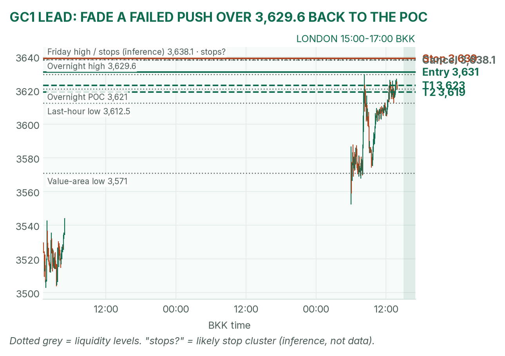
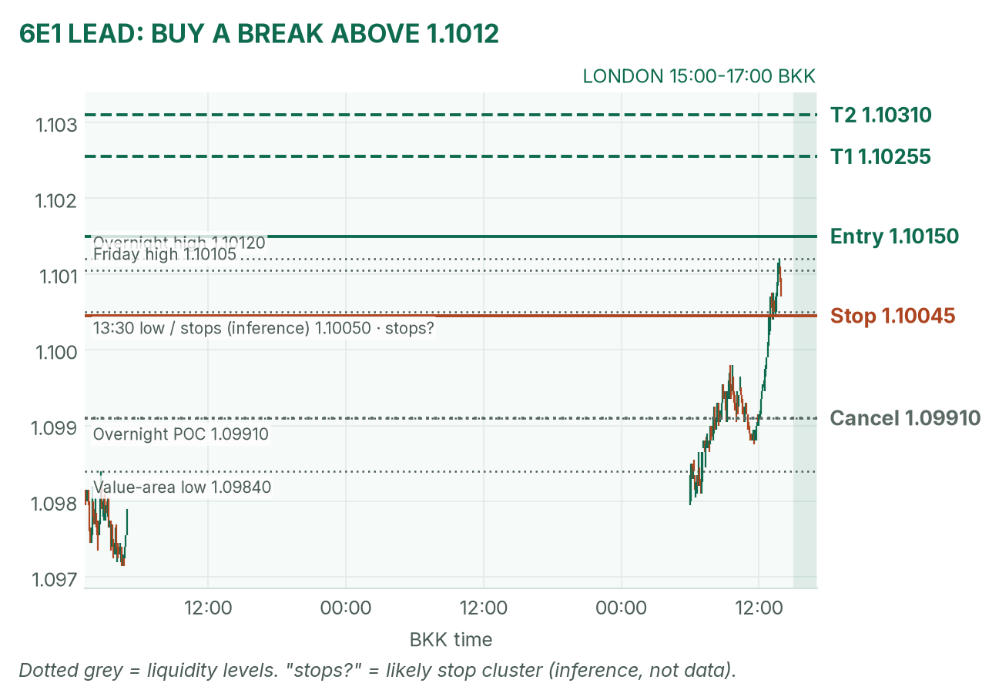

JIM · LONDON TRADE SHEET · MON NOV 23 · LEAN EDITION
Gold bounced 3% and sits on its busiest price. The euro broke Friday's high. Three PMIs land inside the window.
Window 15:00–17:00 BKK. Cut 14:00 BKK (TopstepX Dec, completed 5-minute bars). Levels only, flat by 17:00. Ideas, not advice.
Summary
Risk first: PMIs at 15:15, 15:30 and 16:00 can whip both markets.
GC: fade a failed push over 3,629.6 back to the POC. About 33%.
6E: buy a break above 1.1012. About 25%.
The market story
Forced selling paused; April calls the bounce a breather, not a verdict. Rising yields raise gold's opportunity cost; a softer dollar lifts the euro. Gold looks stretched; the euro leans up.
News (BKK)
Time
Event
Forecast
Prior
15:15
France composite PMI
not verified
46.6
15:30
Germany composite PMI
52.8
53.4
16:00
Eurozone composite PMI
51.6
51.7
Hot = euro up; cold = euro down. No-trade zones: 15:10–15:17, 15:25–15:32, 15:55–16:02. Source: MUFG, Danske Bank.
Levels to watch
Level
GC
6E
Friday high / low
3,638.1 / 3,502.9
1.10105 / 1.0967
Overnight high / low (since 06:00)
3,629.6 / 3,552.3
1.1012 / 1.09795
Overnight POC / value area
3,621 / 3,571–3,622
1.0991 / 1.0984–1.1010
Last-hour high / low
3,627.0 / 3,612.5
1.1012 / 1.10025
Gold (GC1)
Rule: fade the 15:00–15:30 range edges to the POC (busiest price). Model range 3,610–3,631.
Entry
Sell 3,631 after a push over 3,629.6 slips back under
Stop
3,639, above Friday's 3,638.1 high
Targets
1R partial 3,623 · full 3,619 (1.5R)
Cancel
3,638.1 trades first, or no fill by 16:30
Probability
~33%, estimate: GC London fades led our 42-session study (not significant).
Stops likely sit above Friday's high (inference). April partly agrees.

GC 5-minute bars to 14:00.
Scenarios to watch
Bullish: a close above 3,638.1 aims for 3,650.
Bearish: a close below 3,612.5 aims for 3,571.
Euro (6E1)
Rule: trade 15:00–15:30 range breakouts. A pip is 0.0001. Model range 1.0998–1.1017.
Entry
Buy stop 1.1015, after 15:32
Stop
1.10045, under the 13:30 swing low
Targets
1R partial 1.10255 · full 1.1031 (1.5R)
Cancel
1.0991 trades first, or no fill by 16:30
Probability
~25%, estimate: 6E London breakouts averaged +0.31R over 26 sessions (not significant); target beyond the model range.
April agrees on direction; the PMI decides.

6E 5-minute bars to 14:00.
Scenarios to watch
Bearish: a close below 1.10025 aims for 1.0991.
Snap back: a failed poke over 1.1012 aims for 1.1000.
NQ: 25,840.75, mid-range. Not traded.
Before you click
ORB. GC London: 15:00–15:30 range, fade to POC. 6E London: same range, trade breakouts.
Checklist. Account room, daily rules, no release within 30 minutes, bias, level, setup tag, full plan, calm.
Reset. Hands off; breathe in 4, out 6, five times; name the feeling; say the plan.